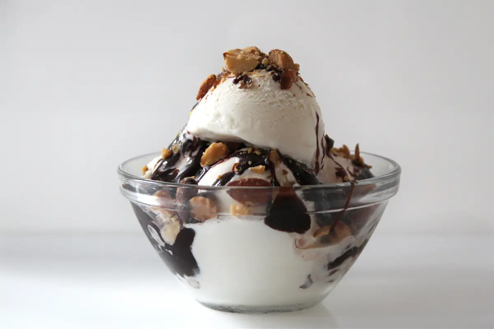

Chocolate Sundae

Description
This Tin Roof Chocolate Sundae recipe is courtesy of H5mag.
Serves 6 and takes approximately 40 minutes to prep and make.
Ingredients
- 2 x 385 g can condensed milk
- 2½ t vanilla extract
- ¼ t salt
- 2 cups whipping cream
- 1 x 380 g can Ideal evaporated milk
- 160 g milk chocolate , broken into small pieces
- 300 g roasted and salted cashews
- 100 g cherries
Steps
-
To make the ice cream, mix 1 can of condensed milk, vanilla
and salt in a bowl. Whip the cream until stiff peaks form.
-
Add a few spoons of whipped cream to the condensed milk and
fold in gently to lighten the mixture. Pour the lightened
condensed milk back into the remaining whipped cream and
gently fold in.
-
Pour this mixture into a plastic freezer-friendly container
or
and freeze for 2 hours.
-
To make the chocolate-fudge sauce, the other can of condence
milk, evaporated milk, and chocolate, in a saucepan over a
low heat, stirring continuously, until all the chocolate
bits have melted. Add the cashews.
-
Once the chocolate has melted, allow the mixture to boil
gently, stirring continuously. Once small bubbles start
forming, take it off the heat and set aside to cool.
-
Once the ice cream is semi-set (after the two hours in the
freezer) swirl in about 2 cups of the chocolate-fudge sauce
and the cashews. Be careful not to overmix. Return to the
freezer for another 8 hours.
-
Serve with some of the remaining chocolate-fudge sauce poured
on top. Decorate with cherries.
Home